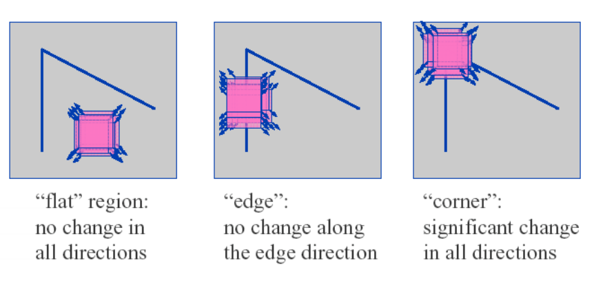
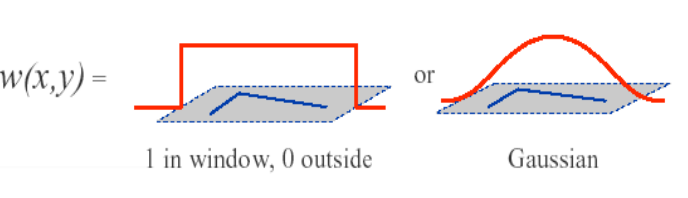
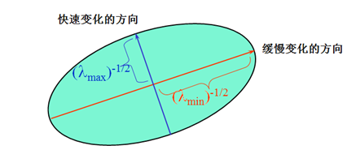
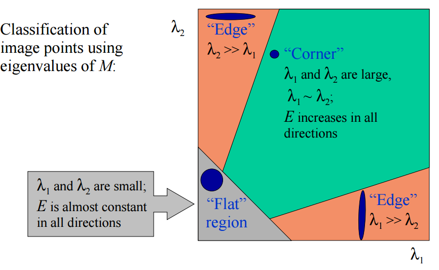
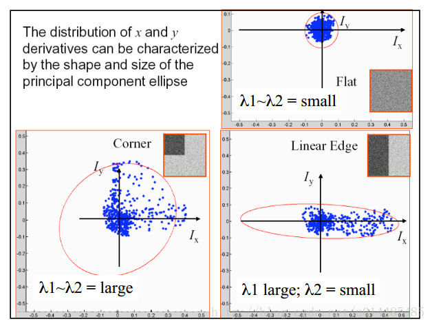
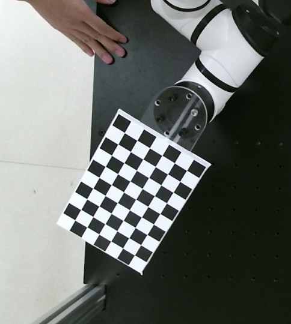
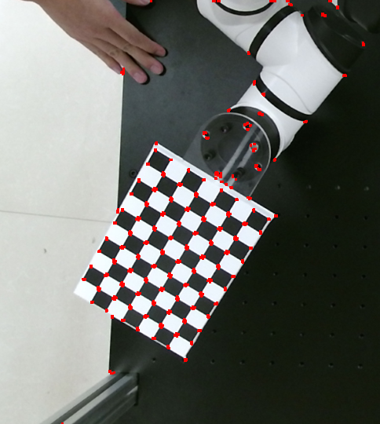
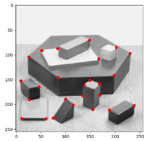

07-角点检测¶
我们已经了解角是图像中各个方向上强度变化最大的区域。
克里斯·哈里斯（Chris Harris）和迈克·史蒂芬斯（Mike Stephens）在1988年的论文《组合式拐角和边缘检测器》（《A Combined Corner and Edge Detector》）中做了一次找到这些拐角的尝试，所以现在将其称为哈里斯拐角检测器。这篇论文把这个简单的想法变成了数学形式。它基本上找到了在所有方向上位移的强度差异。
Harris角点检测原理¶
以一个点为中心，取一个窗口（5x5、7x7）区域，如下图，如果一个窗口往任何方向移动，都会引起比较大的灰度变化，那么往往这就是我们要找的角点。

以下是Harris角点的数学模型，将图像窗口平移[u,v]产生的灰度变化E(u,v)：
- 窗口函数w(x,y)，可以是加权函数（取值全1），也可以是高斯函数

-
平移后的图像灰度\mathrm{I}(x+\mathrm{u}, y+v)
-
像素所在区域的图像灰度\mathrm{I}(x+\mathrm{u})
-K \le u,v \le K，K为我们选取的邻域个数。
对于中括号内的值，在图像强度稳定的区域，差值会接近于0，而在位于强度突变的区域，得到的差值会比较大；我们希望得到比较大的差异区域，以确定角点部分，故而我们希望最大化E(u,v)
所以我们对后半部分进行优化：
使用泰勒级数进行公式简化并展开：
其中变换使用到矩阵的二次型变换规则：
则可以得到新的表示方式：
这里的I_x，I_y分别是x,y方向的梯度，可以通过cv2.Sobel()得到。
简化为：
其中：
Harris特征值分析¶
M为梯度的协方差矩阵，可以把二次项看成一个椭圆函数，我们对M进行特征值分析有λ1，λ2

如下图，根据λ1，λ2的值我们可以把其分为三类：
-
λ1，λ2都很小且近似，E在所有方向接近于常数；
-
λ1>>λ2,或者λ2>>λ1, E将在某一方向上很大；
-
λ1，λ2都很大且近似，E将在所有方向上很大；

即如下图：

在代码实现上为了简化，为了避免直接计算矩阵M的特征值λ_1，λ_2（使用SVD奇异值分解比较消耗时间），我们利用二阶矩阵的行列式det(M)=λ_1λ_2和矩阵的迹trace(M)=λ_1+λ_2，我们定义一个角点响应值R来判断是否是角点。
其中：
-
\operatorname{det}(M)=\lambda_{1} \lambda_{2}
-
\operatorname{trace}(M)=\lambda_{1}+\lambda_{2}
- λ_1，λ_2为矩阵M的特征值
- M=\sum_{x, y} w(x, y)\left[\begin{array}{cc}I_{x}^{2} & I_{x} I_{y} \\ I_{x} I_{y} & I_{y}^{2}\end{array}\right]
- k为系数，通常取0.04~0.06，
λ_1，λ_2同时取得较大值时，R才能得到较大值。k越小，检测子越敏感，得到的角点越多，最后为了得到局部最大值，并且避免重复检测，要进行非极大值抑制（Non-maximal Suppression）
Harris算法实现步骤¶
1、计算图像x,y方向的梯度I_x, I_y
x方向卷积核\begin{bmatrix} -1 & 0 & 1 \\ -1 & 0 & 1 \\ -1 & 0 & 1 \end{bmatrix}，y方向卷积核\begin{bmatrix} -1 & -1 & -1 \\ 0 & 0 & 0 \\ 1 & 1 & 1 \end{bmatrix}
2、计算每个像素点的梯度平方
3、计算梯度在每个像素点的和
4、定义在每个像素点的矩阵H，也就是前面的M
5、计算每个像素的角点响应R
6、设置阈值找出可能点，并进行非极大值抑制
去掉那些强度比最大值的1\%还小的点
Harris ⻆探测器对图像尺度的变化非常敏感。因此，对于不同尺度的图像匹配， Harris 的⻆探测器并不能满足我们的需求。
代码实现¶
哈里斯角点检测¶
Harris Corner Detection
- 待检测图

"""
Harris Corner Detector
"""
import cv2
import numpy as np
filename = './data/chessboard.png'
# filename = './data/3d-modern-building-design-18.jpg'
img = cv2.imread(filename)
gray = cv2.cvtColor(img, cv2.COLOR_BGR2GRAY)
# 将颜色值转成float32格式
gray = np.float32(gray)
"""
img: 输入图像，必须是灰度图、float32类型
blockSize：角点检测要考虑的邻域的大小
ksize：索贝尔算子的大小
k：harris检测等式中的参数变量, 值越小，检测出的点越多
"""
dst = cv2.cornerHarris(gray, 2, 3, 0.04)
# 膨胀检测到的结果，用于显示（可选）
dst = cv2.dilate(dst, None)
# Threshold for an optimal value, it may vary depending on the image.
# 将img中的对应位置设置为红色
dst_max = dst.max()
img[dst > 0.01 * dst_max] = [0, 0, 255]
cv2.imshow('dst', dst)
cv2.imshow('img', img)
if cv2.waitKey(0) & 0xff == 27:
cv2.destroyAllWindows()
- 结果输出

史-托马斯角点检测¶
Shi-Tomasi Corner Detector
1994年年末， J. Shi 和 C. Tomasi 在其论文 《Good Features to Track》 中对其进行了小的修改，与Harris Corner Detector相比，该方法表现出出更好的结果。
import numpy as np
import cv2
from matplotlib import pyplot as plt
img = cv2.imread('./data/blox.jpg')
gray = cv2.cvtColor(img,cv2.COLOR_BGR2GRAY)
"""
maxCorners 最大角点数
qualityLevel 最低接受质量百分比
minDistance 点之间的最小距离
"""
corners = cv2.goodFeaturesToTrack(gray,25,0.01,10)
corners = np.int0(corners)
img_rgb = cv2.cvtColor(img, cv2.COLOR_BGR2RGB)
for i in corners:
x,y = i.ravel()
cv2.circle(img_rgb,(x,y),3,(255, 0, 0),-1)
plt.imshow(img_rgb),plt.show()
- 结果输出
